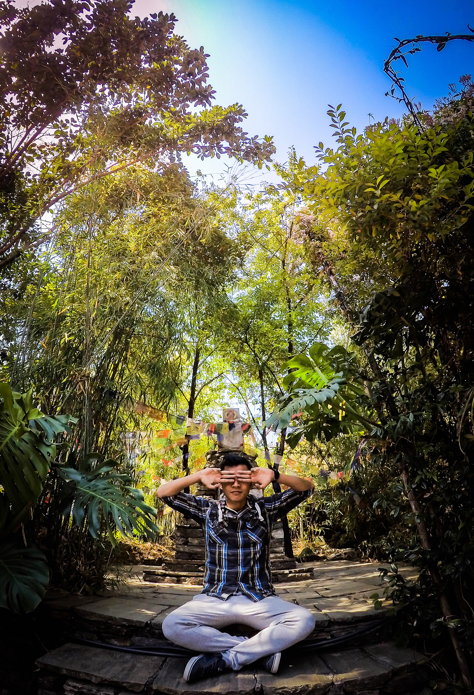
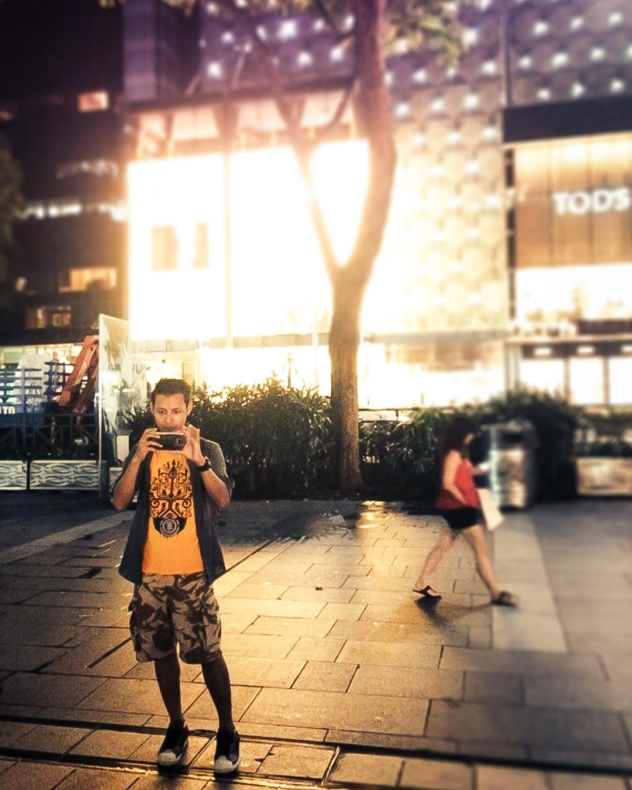

Hello Guest!
My name is Nom Rana. I have been living in Kathmandu for a pretty long time. The things that i love are illustrating, photography and travelling. Not necessary in that order. I've been to many places before from Singapore to Hong Kong to Vietnam, mostly all over asia when i was working in the cruise.
Since i love to edit pictures, i became passionate in photo editings and digital illustrations. Which i found myself using softwares alot and eventually i became curious on how the computer works! Yes it finally lead me to seek adventure as a developer. Although it may seem i may be hopping here and there but thats not it truly. I believe that a person must conquer many traits to seek a never ending knowledge about one's self. The sky is the limit!

Although i'm not a fast learner when it comes to programming codes, somehow i've never lost the interest to learn. This route to the IT world has marvel me every single minute of it. I have never knew how vast and complicating simple things would be like sending an email, adding colour to a font or simply clicking an icon. The codes became a part of things to learn everyday for me and a major challenge on my capabilities!